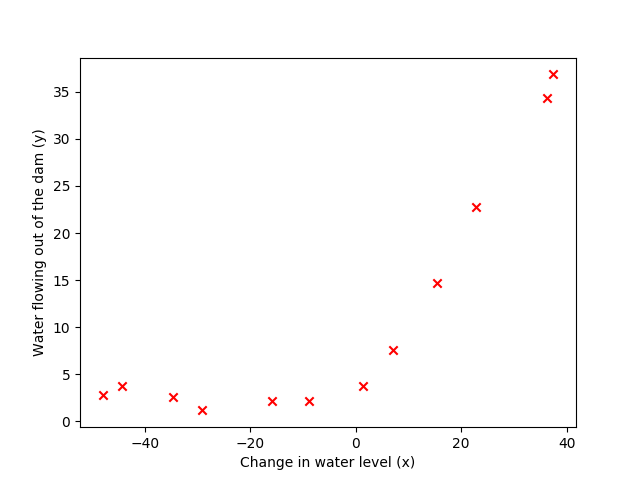
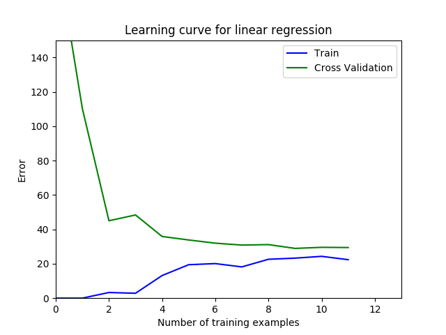
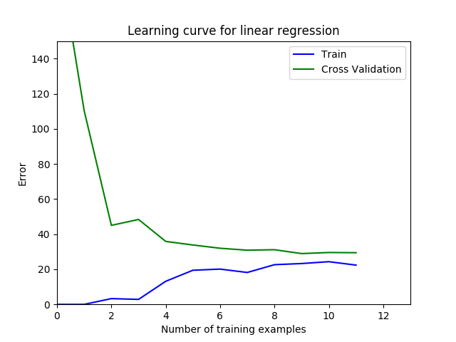

机器学习作业第五周
机器学习
这周没有什么好说的,主要就是根据两个误差与方差曲线去判断算法下一步优化的方向,但是这个我觉得还是要做的多了才知道如何去做下一步的判断,毕竟这么多算法,你肯定得都懂点才能去判断优劣.
ex5.py
from numpy.core import *
import matplotlib.pyplot as plt
from scipy.io import loadmat
from numpy import c_, r_
from fucs5 import linearRegCostFunction, trainLinearReg, learningCurve,\
polyFeatures, featureNormalize, plotFit, validationCurve
if __name__ == "__main__":
# Machine Learning Online Class
# Exercise 5 | Regularized Linear Regression and Bias-Variance
#
# Instructions
# ------------
#
# This file contains code that helps you get started on the
# exercise. You will need to complete the following functions:
#
# linearRegCostFunction.m
# learningCurve.m
# validationCurve.m
#
# For this exercise, you will not need to change any code in this file,
# or any other files other than those mentioned above.
#
# Initialization
# =========== Part 1: Loading and Visualizing Data =============
# We start the exercise by first loading and visualizing the dataset.
# The following code will load the dataset into your environment and plot
# the data.
#
# Load Training Data
print('Loading and Visualizing Data ...')
# Load from ex5data1:
# You will have X, y, Xval, yval, Xtest, ytest in your environment
data = loadmat('/media/zqh/程序与工程/Python_study/Machine_learning/\
machine_learning_exam/week5/ex5data1.mat')
X = data['X']
y = data['y']
Xval = data['Xval']
yval = data['yval']
Xtest = data['Xtest']
ytest = data['ytest']
# m = Number of examples
m = size(X, 0)
# Plot training data
plt.figure()
plt.scatter(X, y, color='r', marker='x')
plt.xlabel('Change in water level (x)')
plt.ylabel('Water flowing out of the dam (y)')
print('Program paused. Press enter to continue.')
# =========== Part 2: Regularized Linear Regression Cost =============
# You should now implement the cost function for regularized linear
# regression.
#
theta = array([1, 1]).reshape(-1, 1)
J, _ = linearRegCostFunction(c_[ones((m, 1), float), X], y, theta, 1)
print('Cost at theta = [1 ; 1]: {}\n \
(this value should be about 303.993192)'.format(J))
print('Program paused. Press enter to continue.')
# =========== Part 3: Regularized Linear Regression Gradient =============
# You should now implement the gradient for regularized linear
# regression.
#
theta = array([1, 1]).reshape(-1, 1)
J, grad = linearRegCostFunction(c_[ones((m, 1), float), X], y, theta, 1)
print('Gradient at theta = [1 ; 1]: [{}; {}] \n\
(this value should be about [-15.303016; 598.250744])'.format(
grad[0], grad[1]))
print('Program paused. Press enter to continue.')
# =========== Part 4: Train Linear Regression =============
# Once you have implemented the cost and gradient correctly, the
# trainLinearReg function will use your cost function to train
# regularized linear regression.
#
# Write Up Note: The data is non-linear, so this will not give a great
# fit.
#
# Train linear regression with lamda = 0
lamda = 0
theta = trainLinearReg(c_[ones((m, 1), float), X], y, lamda)
# Plot fit over the data
plt.figure()
plt.scatter(X, y, color='r', marker='x')
plt.xlabel('Change in water level (x)')
plt.ylabel('Water flowing out of the dam (y)')
plt.plot(X, c_[ones((m, 1), float), X]@theta, 'b--')
print('Program paused. Press enter to continue.')
# =========== Part 5: Learning Curve for Linear Regression =============
# Next, you should implement the learningCurve function.
#
# Write Up Note: Since the model is underfitting the data, we expect to
# see a graph with "high bias" -- Figure 3 in ex5.pdf
#
lamda = 0
error_train, error_val = \
learningCurve(c_[ones((m, 1), float), X], y,
c_[ones((size(Xval, 0), 1), float), Xval], yval,
lamda)
plt.figure()
plt.plot(arange(m), error_train, 'b', arange(m), error_val, 'g')
plt.title('Learning curve for linear regression')
plt.legend(['Train', 'Cross Validation'])
plt.xlabel('Number of training examples')
plt.ylabel('Error')
plt.axis([0, 13, 0, 150])
print('# Training Examples\tTrain Error\tCross Validation Error')
for i in range(m):
print(' \t{}\t\t{:.6f}\t{:.6f}'.format(
i+1, float(error_train[i]), float(error_val[i])))
print('Program paused. Press enter to continue.')
# =========== Part 6: Feature Mapping for Polynomial Regression =========
# One solution to this is to use polynomial regression. You should now
# complete polyFeatures to map each example into its powers
#
p = 8
# Map X onto Polynomial Features and Normalize
X_poly = polyFeatures(X, p)
X_poly, mu, sigma = featureNormalize(X_poly) # Normalize
X_poly = c_[ones((m, 1), float), X_poly] # Add Ones
# Map X_poly_test and normalize (using mu and sigma)
X_poly_test = polyFeatures(Xtest, p)
X_poly_test -= mu
X_poly_test /= sigma
X_poly_test = c_[ones((size(X_poly_test, 0), 1), float),
X_poly_test] # Add Ones
# Map X_poly_val and normalize (using mu and sigma)
X_poly_val = polyFeatures(Xval, p)
X_poly_val -= mu
X_poly_val /= sigma
X_poly_val = c_[ones((size(X_poly_val, 0), 1), float),
X_poly_val] # Add Ones
print('Normalized Training Example 1:')
print(' {} '.format(X_poly[0, :]))
print('Program paused. Press enter to continue.')
# =========== Part 7: Learning Curve for Polynomial Regression ============
# Now, you will get to experiment with polynomial regression with multiple
# values of lamda. The code below runs polynomial regression with
# lamda = 0. You should try running the code with different values of
# lamda to see how the fit and learning curve change.
#
lamda = 0
theta = trainLinearReg(X_poly, y, lamda)
# Plot training data and fit
plt.figure()
plt.scatter(X, y, c='r', marker='x')
plotFit(min(X), max(X), mu, sigma, theta, p)
plt.xlabel('Change in water level (x)')
plt.ylabel('Water flowing out of the dam (y)')
plt.title('Polynomial Regression Fit (lamda ={})'.format(lamda))
plt.figure()
error_train, error_val = learningCurve(
X_poly, y, X_poly_val, yval, lamda)
plt.plot(arange(m), error_train, arange(m), error_val)
plt.title('Polynomial Regression Learning Curve (lamda = {})'
.format(lamda))
plt.xlabel('Number of training examples')
plt.ylabel('Error')
plt.axis([0, 13, 0, 100])
plt.legend(['Train', 'Cross Validation'])
print('Polynomial Regression (lamda = {})'.format(lamda))
print('# Training Examples\tTrain Error\tCross Validation Error')
for i in range(m):
print(' \t{}\t\t{:.6f}\t{:.6f}'.format(
i+1, float(error_train[i]), float(error_val[i])))
print('Program paused. Press enter to continue.')
# =========== Part 8: Validation for Selecting Lamda =============
# You will now implement validationCurve to test various values of
# lamda on a validation set. You will then use this to select the
# "best" lamda value.
#
lamda_vec, error_train, error_val = validationCurve(
X_poly, y, X_poly_val, yval)
plt.figure()
plt.plot(lamda_vec, error_train, lamda_vec, error_val)
plt.legend(['Train', 'Cross Validation'])
plt.xlabel('lamda')
plt.ylabel('Error')
print('lamda\t\tTrain Error\tValidation Error')
for i in range(size(lamda_vec)):
print(' {:.6f}\t{:.6f}\t{:.6f}'.format(float(lamda_vec[i]),
float(error_train[i]),
float(error_val[i])))
print('Program paused. Press enter to continue.')
plt.show()执行效果
➜ Machine_learning /usr/bin/python3 /media/zqh/程序与工程/Python_study/Machine_learning/machine_learning_exam/week5/ex5.py
Loading and Visualizing Data ...
Program paused. Press enter to continue.
Cost at theta = [1 ; 1]: 303.9931922202643
(this value should be about 303.993192)
Program paused. Press enter to continue.
Gradient at theta = [1 ; 1]: [-15.303015674201186; 598.2507441727035]
(this value should be about [-15.303016; 598.250744])
Program paused. Press enter to continue.
.
.
.
# Training Examples Train Error Cross Validation Error
1 0.000000 205.121096
2 0.000000 110.300366
3 3.286595 45.010232
4 2.842678 48.368911
5 13.154049 35.865141
6 19.443963 33.829957
7 20.098522 31.970987
8 18.172859 30.862446
9 22.609405 31.135998
10 23.261462 28.936207
11 24.317250 29.551432
12 22.373906 29.433818
Program paused. Press enter to continue.
Normalized Training Example 1:
[ 1. -0.36214078 -0.75508669 0.18222588 -0.70618991 0.30661792
-0.59087767 0.3445158 -0.50848117]
Program paused. Press enter to continue.
.
.
.
Polynomial Regression (lamda = 0)
# Training Examples Train Error Cross Validation Error
1 0.000000 160.721900
2 0.000000 160.121510
3 0.000000 61.755005
4 0.000000 61.928895
5 0.000000 6.597673
6 0.000000 10.645191
7 0.000000 27.988538
8 0.000889 20.280259
9 0.000236 31.876446
10 0.040922 19.687148
11 0.045236 15.815669
12 0.095506 8.738590
Program paused. Press enter to continue.
.
.
.
lamda Train Error Validation Error
0.000000 0.095506 8.738590
0.001000 0.177934 12.630771
0.003000 0.249932 16.348329
0.010000 0.385063 17.046746
0.030000 0.669275 13.049682
0.100000 1.443470 8.149481
0.300000 3.101591 5.882464
1.000000 7.268148 7.227466
3.000000 15.867688 10.089379
10.000000 33.372203 19.819785
Program paused. Press enter to continue.  
 


fucs5.py
from numpy.core import *
from numpy import c_, r_
from scipy.special import expit
from scipy.optimize import fmin_cg
import matplotlib.pyplot as plt
def linearRegCostFunction(X: ndarray, y: ndarray, theta: ndarray, lamda):
# LINEARREGCOSTFUNCTION Compute cost and gradient for regularized linear
# regression with multiple variables
# [J, grad] = LINEARREGCOSTFUNCTION(X, y, theta, lamda) computes the
# cost of using theta as the parameter for linear regression to fit the
# data points in X and y. Returns the cost in J and the gradient in grad
# Initialize some useful values
m = y.shape[0] # number of training examples
# You need to return the following variables correctly
J = 0
theta = theta.reshape(-1, 1)
grad = zeros(shape(theta)) # type:ndarray
# ====================== YOUR CODE HERE ======================
# Instructions: Compute the cost and gradient of regularized linear
# regression for a particular choice of theta.
#
# You should set J to the cost and grad to the gradient.
#
temp = zeros(shape(theta))
temp[1:, :] = theta[1:, :]
J = (sum(power(X@theta-y, 2))+lamda*sum(temp.T @temp))/(2*m)
grad = (X.T@(X@theta-y)+lamda*temp)/m
# =========================================================================
grad = grad.flatten()
return J, grad
def trainLinearReg(X: ndarray, y: ndarray, lamda: float)->ndarray:
# TRAINLINEARREG Trains linear regression given a dataset(X, y) and a
# regularization parameter lamda
# [theta] = TRAINLINEARREG(X, y, lamda) trains linear regression using
# the dataset(X, y) and regularization parameter lamda. Returns the
# trained parameters theta.
#
# Initialize Theta
initial_theta = zeros(size(X, 1))
# Create "short hand" for the cost function to be minimized
def costFuc(t): return linearRegCostFunction(X, y, t, lamda)[0]
def gardFuc(t): return linearRegCostFunction(X, y, t, lamda)[1]
# Now, costFunction is a function that takes in only one argument
# ops = {'maxiter': 200, 'disp': True}
# Minimize using fmincg
theta = fmin_cg(costFuc, initial_theta, gardFuc, maxiter=200, disp=True)
return theta
def learningCurve(X: ndarray, y: ndarray, Xval: ndarray, yval: ndarray, lamda):
# LEARNINGCURVE Generates the train and cross validation set errors needed
# to plot a learning curve
# [error_train, error_val] = ...
# LEARNINGCURVE(X, y, Xval, yval, lamda) returns the train and
# cross validation set errors for a learning curve. In particular,
# it returns two vectors of the same length - error_train and
# error_val. Then, error_train(i) contains the training error for
# i examples (and similarly for error_val(i)).
#
# In this function, you will compute the train and test errors for
# dataset sizes from 1 up to m. In practice, when working with larger
# datasets, you might want to do this in larger intervals.
#
# Number of training examples
m = size(X, 0)
# You need to return these values correctly
error_train = zeros((m, 1))
error_val = zeros((m, 1))
# ====================== YOUR CODE HERE ======================
# Instructions: Fill in this function to return training errors in
# error_train and the cross validation errors in error_val.
# i.e., error_train(i) and
# error_val(i) should give you the errors
# obtained after training on i examples.
#
# Note: You should evaluate the training error on the first i training
# examples (i.e., X(1:i, :) and y(1:i)).
#
# For the cross-validation error, you should instead evaluate on
# the _entire_ cross validation set (Xval and yval).
#
# Note: If you are using your cost function (linearRegCostFunction)
# to compute the training and cross validation error, you should
# call the function with the lamda argument set to 0.
# Do note that you will still need to use lamda when running
# the training to obtain the theta parameters.
#
# Hint: You can loop over the examples with the following:
#
# for i = 1:m
# # Compute train/cross validation errors using training examples
# # X(1:i, :) and y(1:i), storing the result in
# # error_train(i) and error_val(i)
# ....
#
# end
#
# ---------------------- Sample Solution ----------------------
for i in range(m):
theta = trainLinearReg(X[:i+1, :], y[:i+1, :], lamda)
error_train[i, :] = linearRegCostFunction(
X[:i+1, :], y[:i+1, :], theta, lamda)[0]
error_val[i, :] = linearRegCostFunction(
Xval, yval, theta, lamda)[0]
# -------------------------------------------------------------
# =========================================================================
return error_train, error_val
def polyFeatures(X: ndarray, p)->ndarray:
# POLYFEATURES Maps X (1D vector) into the p-th power
# [X_poly] = POLYFEATURES(X, p) takes a data matrix X (size m x 1) and
# maps each example into its polynomial features where
# X_poly(i, :) = [X(i) X(i).^2 X(i).^3 ... X(i).^p];
#
# You need to return the following variables correctly.
X_poly = zeros((size(X), p))
# ====================== YOUR CODE HERE ======================
# Instructions: Given a vector X, return a matrix X_poly where the p-th
# column of X contains the values of X to the p-th power.
#
#
for i in range(p):
X_poly[:, i] = power(X, i+1).flatten()
# =========================================================================
return X_poly
def featureNormalize(X: ndarray):
# FEATURENORMALIZE Normalizes the features in X
# FEATURENORMALIZE(X) returns a normalized version of X where
# the mean value of each feature is 0 and the standard deviation
# is 1. This is often a good preprocessing step to do when
# working with learning algorithms.
mu = mean(X, axis=0)
X_norm = X - mu
sigma = std(X_norm, axis=0, ddof=1)
X_norm /= sigma
# ============================================================
return X_norm, mu, sigma
def plotFit(min_x, max_x, mu, sigma, theta, p):
# PLOTFIT Plots a learned polynomial regression fit over an existing figure
# Also works with linear regression.
# PLOTFIT(min_x, max_x, mu, sigma, theta, p) plots the learned polynomial
# fit with power p and feature normalization (mu, sigma).
# Hold on to the current figure
# We plot a range slightly bigger than the min and max values to get
# an idea of how the fit will vary outside the range of the data points
x = arange(min_x - 15, max_x + 25, 0.05).reshape(-1, 1)
# Map the X values
X_poly = polyFeatures(x, p)
X_poly -= mu
X_poly /= sigma
# Add ones
X_poly = c_[ones((size(x, 0), 1), float), X_poly]
# Plot
plt.plot(x, X_poly@theta, 'b--')
# Hold off to the current figure
def validationCurve(X: ndarray, y: ndarray, Xval: ndarray, yval: ndarray):
# VALIDATIONCURVE Generate the train and validation errors needed to
# plot a validation curve that we can use to select lambda
# [lambda_vec, error_train, error_val] = ...
# VALIDATIONCURVE(X, y, Xval, yval) returns the train
# and validation errors (in error_train, error_val)
# for different values of lambda. You are given the training set (X,
# y) and validation set (Xval, yval).
#
# Selected values of lambda (you should not change this)
lambda_vec = array([0, 0.001, 0.003, 0.01, 0.03, 0.1,
0.3, 1, 3, 10]).reshape(-1, 1)
# You need to return these variables correctly.
error_train = zeros((size(lambda_vec), 1))
error_val = zeros((size(lambda_vec), 1))
# ====================== YOUR CODE HERE ======================
# Instructions: Fill in this function to return training errors in
# error_train and the validation errors in error_val. The
# vector lambda_vec contains the different lambda parameters
# to use for each calculation of the errors, i.e,
# error_train(i), and error_val(i) should give
# you the errors obtained after training with
# lambda = lambda_vec(i)
#
# Note: You can loop over lambda_vec with the following:
#
# for i = 1:length(lambda_vec)
# lambda = lambda_vec(i);
# # Compute train / val errors when training linear
# # regression with regularization parameter lambda
# # You should store the result in error_train(i)
# # and error_val(i)
# ....
#
# end
#
#
for i in range(size(lambda_vec)):
lamda = lambda_vec[i, :]
theta = trainLinearReg(X, y, lamda)
error_train[i, :] = linearRegCostFunction(X, y, theta, lamda)[0]
error_val[i, :] = linearRegCostFunction(Xval, yval, theta, lamda)[0]
# =========================================================================
return lambda_vec, error_train, error_val